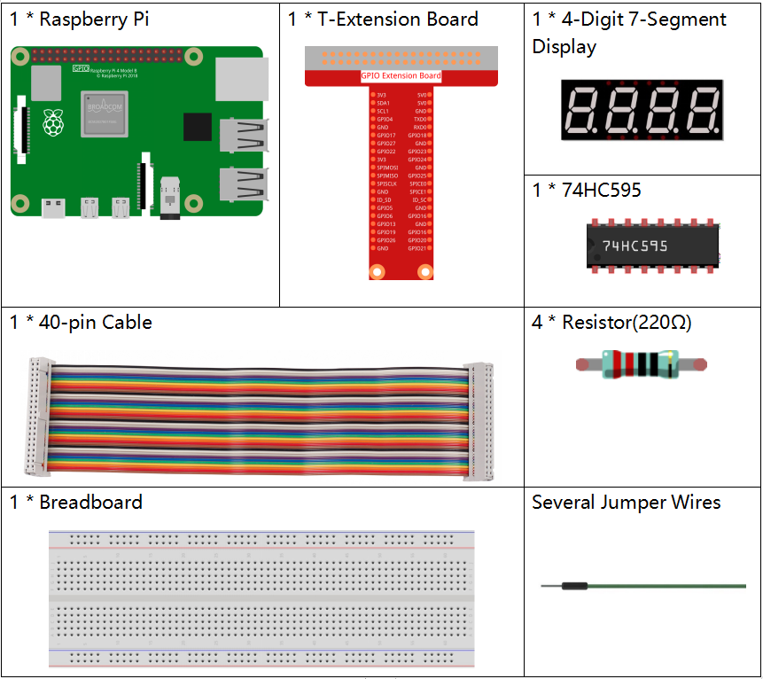
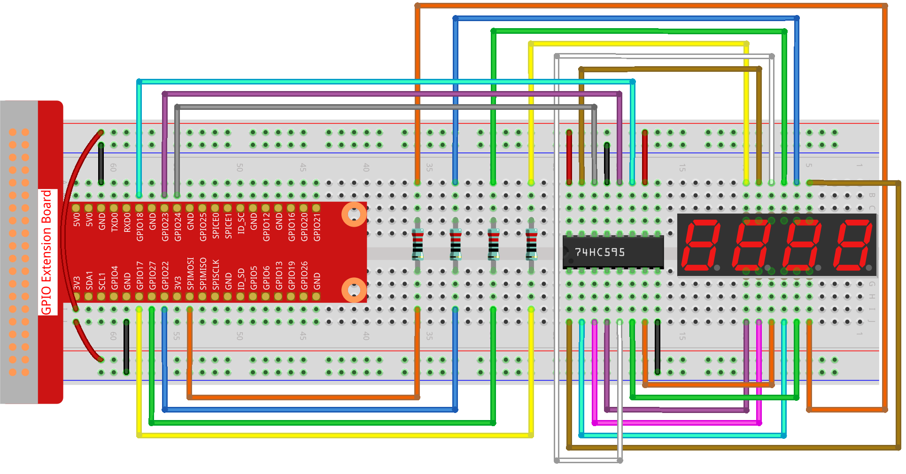

Nota
Ciao, benvenuto nella Community di Facebook dedicata agli appassionati di SunFounder Raspberry Pi, Arduino ed ESP32! Approfondisci le tue conoscenze su Raspberry Pi, Arduino ed ESP32 insieme ad altri appassionati.
Perché unirsi a noi?
Supporto Esperto: Risolvi problematiche post-vendita e sfide tecniche con l’aiuto della nostra comunità e del nostro team.
Impara e Condividi: Scambia consigli e tutorial per migliorare le tue competenze.
Anteprime Esclusive: Ottieni accesso anticipato agli annunci di nuovi prodotti e alle anteprime.
Sconti Speciali: Approfitta di sconti esclusivi sui nostri prodotti più recenti.
Promozioni Festive e Giveaway: Partecipa a concorsi e promozioni speciali.
👉 Sei pronto a esplorare e creare con noi? Clicca su [Qui] e unisciti subito!
1.1.5 Display a 4 Cifre e 7 Segmenti
Introduzione
Proviamo a controllare un display a 7 segmenti a 4 cifre.
Componenti Necessari
Per questo progetto, avremo bisogno dei seguenti componenti.
Schema a Blocchi
T-Board Name |
physical |
BCM |
GPIO17 |
Pin 11 |
17 |
GPIO27 |
Pin 13 |
27 |
GPIO22 |
Pin 15 |
22 |
SPIMOSI |
Pin 19 |
10 |
GPIO18 |
Pin 12 |
18 |
GPIO23 |
Pin 16 |
23 |
GPIO24 |
Pin 18 |
24 |

Procedure Sperimentali
Passo 1: Costruisci il circuito.
Passo 2: Accedi alla cartella del codice.
cd ~/davinci-kit-for-raspberry-pi/python-pi5
Passo 3: Esegui il file eseguibile.
sudo python3 1.1.5_4-Digit.py
Dopo l’esecuzione del codice, il programma avvierà un conteggio, incrementando di 1 ogni secondo, visualizzando il valore sul display a 4 cifre.
Avvertimento
Se appare l’errore RuntimeError: Cannot determine SOC peripheral base address, consulta Se gpiozero non funziona.
Codice
Nota
Puoi Modificare/Reimpostare/Copiare/Eseguire/Arrestare il codice qui sotto. Ma prima, è necessario andare al percorso del codice sorgente, come davinci-kit-for-raspberry-pi/python-pi5. Dopo aver modificato il codice, puoi eseguirlo direttamente per vedere l’effetto.
#!/usr/bin/env python3
from gpiozero import OutputDevice
import time
import threading
# Definizione dei pin GPIO per il registro a scorrimento 74HC595
SDI = OutputDevice(24) # Ingresso Dati Seriali
RCLK = OutputDevice(23) # Clock del Registro
SRCLK = OutputDevice(18) # Clock del Registro a Scorrimento
# Definizione dei pin GPIO per la selezione delle cifre sul display a 7 segmenti
placePin = [OutputDevice(pin) for pin in (10, 22, 27, 17)]
# Codici dei segmenti per i numeri da 0 a 9 per il display a 7 segmenti
number = (0xc0, 0xf9, 0xa4, 0xb0, 0x99, 0x92, 0x82, 0xf8, 0x80, 0x90)
counter = 0 # Inizializzazione del contatore per il display
timer1 = 0 # Inizializzazione del timer per l'incremento del contatore
def clearDisplay():
""" Clear the 7-segment display. """
for _ in range(8):
SDI.on()
SRCLK.on()
SRCLK.off()
RCLK.on()
RCLK.off()
def hc595_shift(data):
""" Shift a byte of data to the 74HC595 shift register. """
for i in range(8):
SDI.value = 0x80 & (data << i) # Imposta SDI in base al bit di dati
SRCLK.on() # Attiva il clock del registro a scorrimento
SRCLK.off()
RCLK.on() # Trasferisce i dati sull'uscita attivando il clock del registro
RCLK.off()
def pickDigit(digit):
""" Select a digit for display on the 7-segment display. """
for pin in placePin:
pin.off() # Spegne tutti i pin di selezione della cifra
placePin[digit].on() # Accende la cifra selezionata
def timer():
""" Timer function to increment the counter every second. """
global counter, timer1
timer1 = threading.Timer(1.0, timer) # Imposta il timer per l'incremento
timer1.start()
counter += 1 # Incrementa il contatore
print("%d" % counter) # Stampa il valore corrente del contatore
def setup():
""" Setup initial state and start the timer. """
global timer1
timer1 = threading.Timer(1.0, timer) # Inizializza e avvia il timer
timer1.start()
def loop():
""" Main loop to update the 7-segment display with counter value. """
global counter
while True:
for i in range(4): # Scorre ogni cifra
clearDisplay() # Pulisce il display prima di impostare la nuova cifra
pickDigit(i) # Seleziona la cifra per la visualizzazione
digit = (counter // (10 ** i)) % 10
hc595_shift(number[digit]) # Trasferisce il valore della cifra a 74HC595
time.sleep(0.001) # Breve ritardo per stabilità del display
def destroy():
""" Cleanup GPIO resources and stop timer on exit. """
global timer1
timer1.cancel() # Ferma il timer
for device in [SDI, RCLK, SRCLK] + placePin:
device.close() # Chiude i dispositivi GPIO
try:
setup() # Inizializza la configurazione
while True:
loop() # Avvia il ciclo principale
except KeyboardInterrupt:
# Gestisce l'interruzione dello script (ad esempio Ctrl+C)
destroy() # Libera le risorse all'uscita
Spiegazione del Codice
Questi quattro pin controllano i pin anodici comuni dei display a 7 segmenti a quattro cifre.
# Definizione dei pin GPIO per la selezione delle cifre sul display a 7 segmenti placePin = [OutputDevice(pin) for pin in (10, 22, 27, 17)]
Un array di codici dei segmenti in esadecimale da 0 a 9 (anodo comune).
# Codici dei segmenti per i numeri da 0 a 9 per il display a 7 segmenti number = (0xc0, 0xf9, 0xa4, 0xb0, 0x99, 0x92, 0x82, 0xf8, 0x80, 0x90)
Inizializza un timer che attiva la funzione timer ogni secondo, impostando l’incremento ricorrente del contatore.
def setup(): """ Setup initial state and start the timer. """ global timer1 timer1 = threading.Timer(1.0, timer) # Inizializza e avvia il timer timer1.start()
Dopo che il Timer raggiunge 1.0s, la funzione Timer viene richiamata; aggiunge 1 al contatore e utilizza nuovamente il Timer per eseguirsi ogni secondo.
def timer(): """ Timer function to increment the counter every second. """ global counter, timer1 timer1 = threading.Timer(1.0, timer) # Reimposta il timer per l'incremento successivo timer1.start() counter += 1 # Incrementa il contatore print("%d" % counter) # Stampa il valore corrente del contatore
Trasferisce un byte di dati nel registro a scorrimento 74HC595, controllando i segmenti del display.
def hc595_shift(data): """ Shift a byte of data to the 74HC595 shift register. """ for i in range(8): SDI.value = 0x80 & (data << i) # Imposta SDI in base al bit di dati SRCLK.on() # Attiva il clock del registro a scorrimento SRCLK.off() RCLK.on() # Latch dei dati sull'uscita tramite il clock del registro RCLK.off()
Aggiorna continuamente il display con il valore corrente del contatore, mostrando ogni cifra in sequenza.
def loop(): """ Main loop to update the 7-segment display with counter value. """ global counter while True: for i in range(4): # Scorre ogni cifra clearDisplay() # Pulisce il display prima di impostare la nuova cifra pickDigit(i) # Seleziona la cifra per la visualizzazione digit = (counter // (10 ** i)) % 10 hc595_shift(number[digit]) # Trasferisce il valore della cifra a 74HC595 time.sleep(0.001) # Breve ritardo per stabilità del display
Pulisce il display a 7 segmenti impostando tutti i segmenti su off prima di visualizzare la cifra successiva.
def clearDisplay(): """ Clear the 7-segment display. """ for _ in range(8): SDI.on() SRCLK.on() SRCLK.off() RCLK.on() RCLK.off()
Seleziona quale cifra del display a 7 segmenti attivare. Ogni cifra è controllata da un pin GPIO separato.
def pickDigit(digit): """ Select a digit for display on the 7-segment display. """ for pin in placePin: pin.off() # Spegne tutti i pin di selezione della cifra placePin[digit].on() # Accende la cifra selezionata
Libera le risorse GPIO e ferma il timer correttamente quando il programma viene interrotto.
except KeyboardInterrupt: # Gestisce l'interruzione dello script (ad esempio Ctrl+C) destroy() # Libera le risorse all'uscita